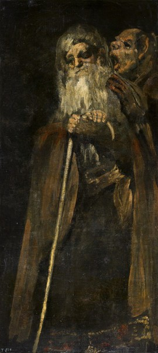
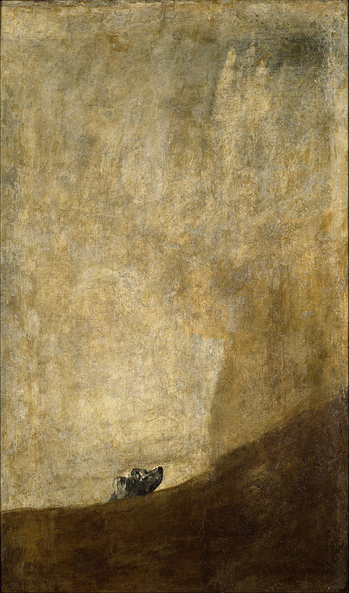
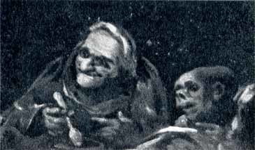
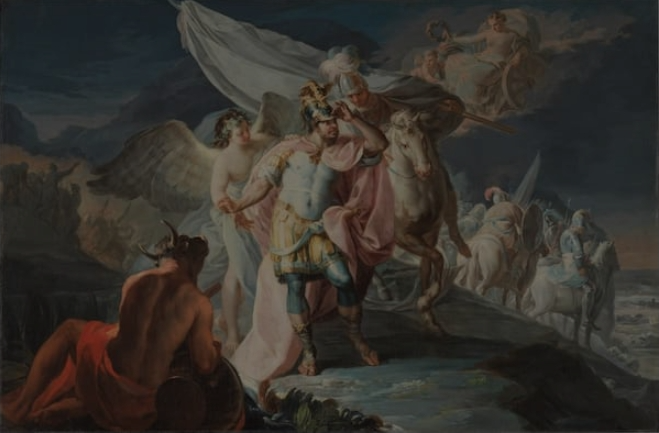
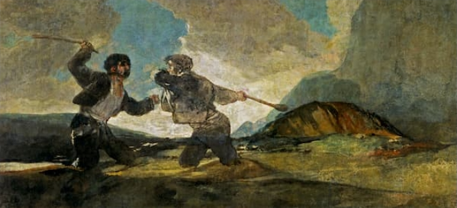
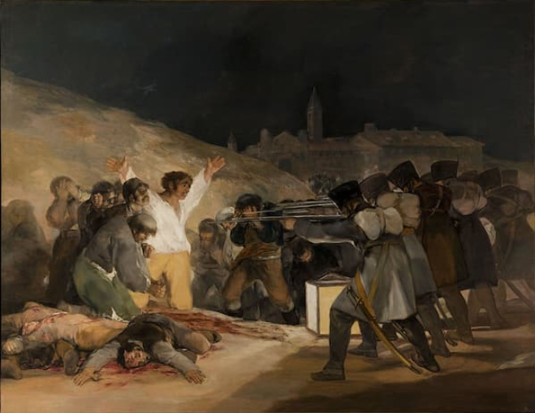
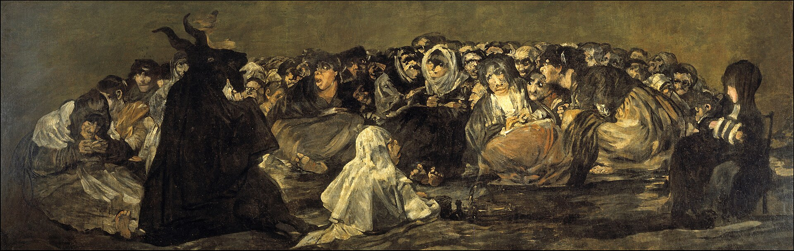
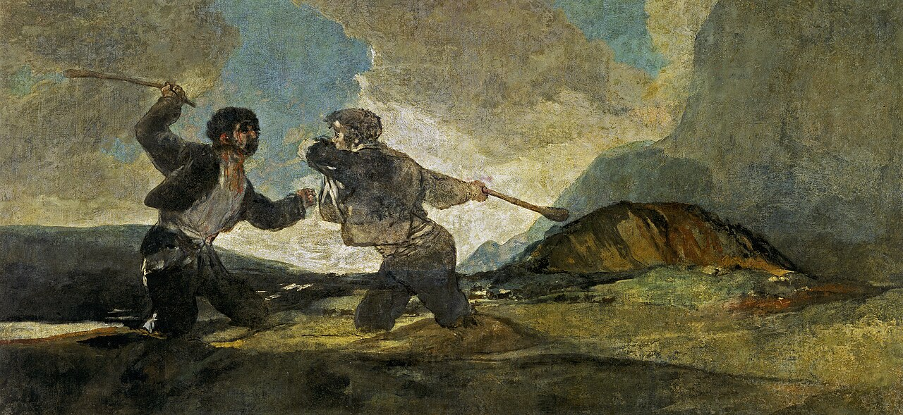
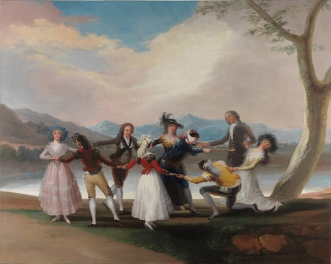
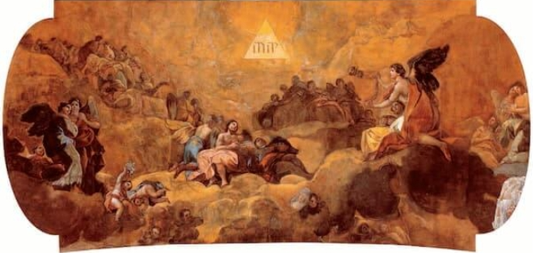

Ulises Lizardo Lopez Herrera | Carnet: 0900 - 26 - 53


2. Francisco de Goya (1746 – 1828)
Estilo y Movimiento: Romanticismo, Precursor del Expresionismo (Etapa de las Pinturas Negras).
Aunque comenzó su carrera en los salones reales, Goya descendió a su propio abismo tras la sordera y los horrores de la guerra. Su estilo evolucionó hacia pinceladas viscerales, paletas oscuras y una crudeza psicológica sin precedentes en su época. Sus famosas Pinturas Negras y la serie de grabados Los Caprichos desafiaron los estándares de la belleza clásica para retratar la locura, la superstición, la violencia y la decadencia de la condición humana.
¿Por qué está en El Abismo?: Goya demostró que los verdaderos monstruos no pertenecen a la mitología, sino que habitan dentro de la sociedad. Su capacidad para pintar la oscuridad del alma humana lo convierte en el pilar histórico y espiritual de nuestra galería.










"Y conoceréis la verdad y la verdad os hará libres"